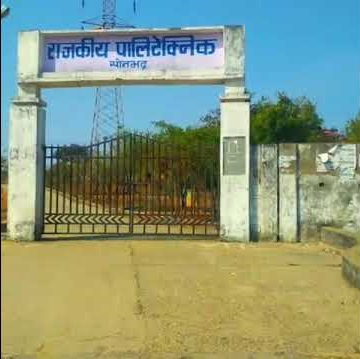
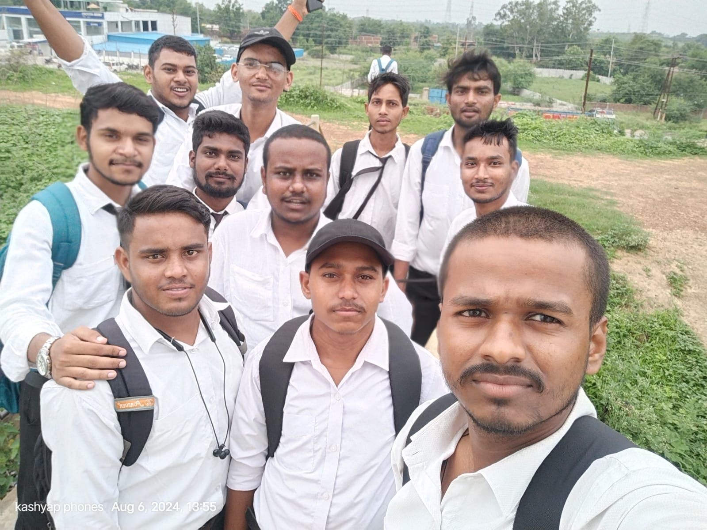
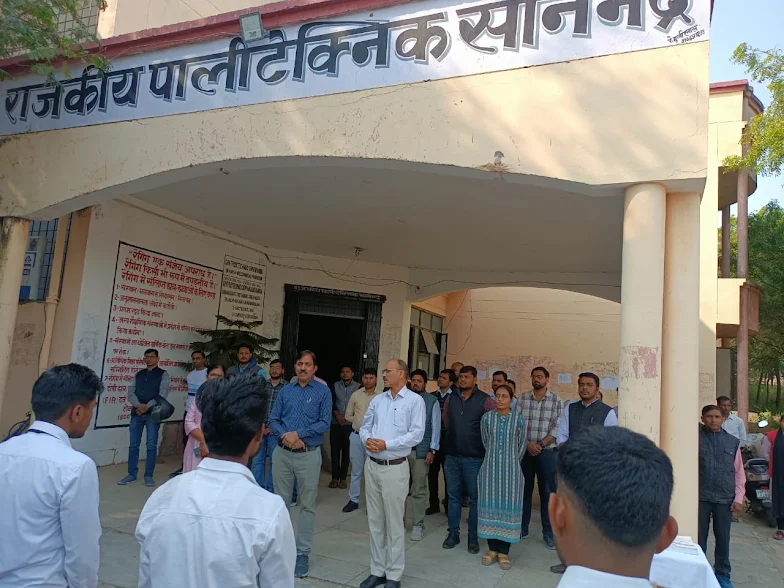
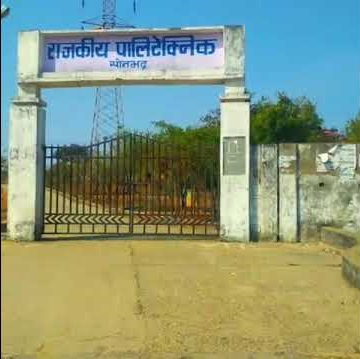
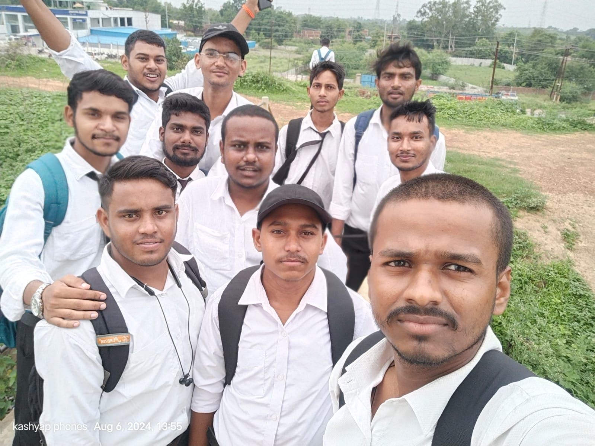
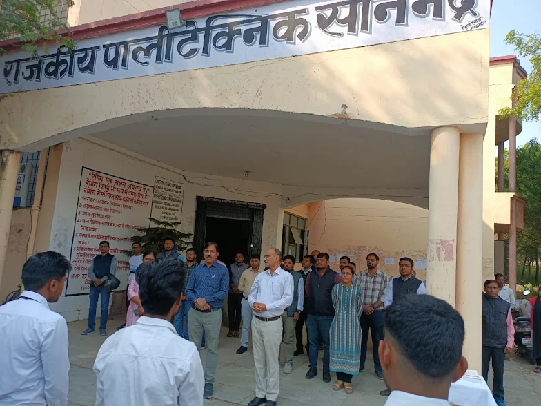

Government Polytechnic Chopan, Sonbhadra
 






News And Events
JEECUP Counselling related queries & important documents for verification 2025. Click here...
JEECUP Counselling related List of documents required for Admission 2025. Click here...
JEECUP Counselling related Fee Structure for Admission 2025. Click here to view...
JBM recruits 27 students from Mechanical, Automobile 3rd year on campus drive
An event on Food Waste Management
Director
Directorate of Technical Education, Uttar Pradesh
Add. Chief Secretary, Technical Education
Uttar Pradesh
GOVERNMENT POLYTECHNIC CHOPAN SONBHADRA
Established in 2016, Government Polytechnic Chopan, Sonbhadra has rapidly emerged as a key government institution dedicated to technical education in Uttar Pradesh.
Affiliated with the Board of Technical Education, Uttar Pradesh, Lucknow, the institute embodies the state’s vision of empowering youth through quality engineering and technology education.
The institute was founded to expand technical education opportunities in the Sonbhadra region, an area previously lacking sufficient higher educational infrastructure.
Initially, academic activities began at the Government Polytechnic Sonbhadra campus in Lodhi, Robertsganj, while the permanent facilities in Chopan were being developed.
From the outset, the institute has focused on creating an environment that nurtures academic excellence and practical skills.
Government Polytechnic Chopan offers three core diploma programs: Computer Science and Engineering, Electronics Engineering, and Automobile Engineering.
These programs are designed to equip students with foundational knowledge and industry-relevant skills, following a curriculum approved by the Board of Technical Education, Uttar Pradesh.
This ensures graduates are well-prepared for critical and evolving engineering fields.
The Computer Science program emphasizes programming, software development, and networking, preparing students for IT and software roles.
Electronics Engineering covers electronic circuits, communication systems, and embedded technology, catering to telecommunications and automation industries.
The Automobile Engineering diploma focuses on vehicle design, manufacturing, and maintenance, addressing the demands of a rapidly advancing automotive sector.
The institute strongly promotes inclusivity and hands-on learning.
With experienced faculty, modern labs, and regular workshops and industry visits, students gain practical experience and exposure to current industry trends.
Collaborations with industry and government initiatives like “Skill India” ensure that training aligns with national development goals.
Graduates emerge not only job-ready but also capable of innovation and sustainable contributions.
Government Polytechnic Chopan has earned a respected reputation in Uttar Pradesh for quality education and remains committed to expanding and evolving its offerings to meet future challenges.